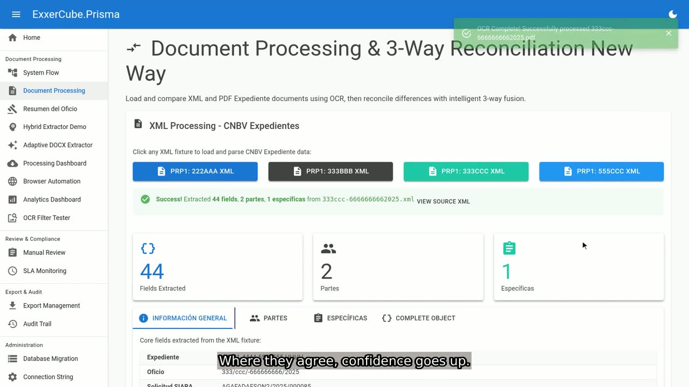

Every SIARA request, read, reconciled and answered on time.
Authorities send Mexican financial institutions a steady stream of oficios through the CNBV's SIARA portal — freezes, unfreezes, information requests — each due in a few business days. Prisma downloads each case, reads the PDF, DOCX and XML, checks them against each other, and hands your team a verified record with the deadline already counted.
3 / 3 fuentes
- Type
- Aseguramiento (freeze)
- Authority
- Mercantile court (judicial)
- Subject
- Marcelo Zu Carnal, RFC ZUCM444444555
- Amount
- $76,813.31 MXN
- Received
- Wed 4 Jun 2025
- Due
- Mon 9 Jun 2025, in 3 business days
See Prisma work a case, start to finish
Six short videos, six minutes in all, recorded on the running system with a synthetic case. Start with the overview, or jump to the part you care about.

Overview
What Prisma does with a SIARA request, from download to the audit trail, in ninety seconds.
- OverviewWhat Prisma does with a SIARA request, from download to the audit trail, in ninety seconds.1:34
- From SIARA to PrismaThe downloader signs in on its own schedule, collects every new case with all its files and hands them to processing.0:45
- Three sources, one answerThe XML, Word file and scanned PDF compared field by field, and a conflict flagged instead of guessed.1:00
- Review queue and deadlinesA reviewer's day: cases closest to their deadline first, corrections with notes, and escalation before a deadline is missed.1:00
- Export and audit trailExports in the regulator's formats, and an append-only record of every action you can show an examiner.0:45
- Under the hoodFor engineers: the hexagonal .NET 10 architecture, its tests, and the end-to-end gate running all three processes.1:00
The work behind one oficio
A single request arrives as up to three files that are supposed to say the same thing and often don't. Someone has to open each one, retype the case number, the people and the amounts, decide what kind of order it is, count the deadline in business days — skipping weekends and holidays — search the institution's systems, and prepare a response in the regulator's format. Multiply that by hundreds of requests a month, and a single mistyped digit or missed deadline becomes a regulatory finding.
How Prisma handles a case
Each step runs on its own and records what it did, so a reviewer can always see where a value came from.
-
Download
A downloader running as its own process collects new cases from SIARA and passes on only a reference to the stored files. It never keeps your portal credentials.
-
Read
Native text is taken straight from digital PDFs; scanned pages go through image-quality analysis, cleanup filters and Tesseract OCR. DOCX and XML are parsed directly.
-
Reconcile
The three sources are compared field by field. Agreement raises confidence; disagreement is flagged with both values instead of being silently resolved.
-
Classify
The request is typed — freeze, unfreeze, information, transfer, blocked-persons list — and the deadline is computed in Mexican business days.
-
Review
Confident cases move on; doubtful ones land in a review queue that shows the original document next to every extracted field, with an audit trail of each decision.
-
Answer
The response is exported as SIRO XML, Excel and PDF, ready for your institution's filing process.
Three sources, one answer you can defend
OCR is good, not perfect. A scanned "5" read as "S" is exactly the kind of error that slips past a tired reviewer. Because Prisma reads the XML and DOCX as well, it can see that the scan disagrees, keep the value the other two sources confirm, and tell you it did so.
When the sources can't be reconciled, the case is not guessed — it goes to a person, with the conflicting values side by side.
Built for a regulated environment
Three processes, three privileges
Downloading, reading and deciding run as separate processes, each with its own identity and clearance. Every handoff carries a signed token bound to that one document, and a process that receives work outside its clearance rejects it.
No stored portal credentials
You choose how SIARA sign-in happens: a person signs in, a person hands over a live session, or credentials are fetched from your secret store at login time. In every mode, Prisma never saves them.
An audit trail you can show an examiner
Every extraction, correction and approval is recorded with who, when and from which source, in an append-only ledger protected at the database level.
Runs where your data lives
Self-hosted on your infrastructure, on Windows or Linux, with Docker images for each service. OCR runs locally; no document leaves your network.
For the engineers evaluating it
Prisma is a .NET 10 solution in a hexagonal architecture: domain and application logic have no idea which OCR engine, database or portal they are talking to. Errors travel as values (Result<T>), not exceptions, and every async path honors cancellation.
The architecture itself is under test — dependency direction, interface placement and layering are enforced by an automated suite — alongside contract tests, mutation-killing tests and a full-pipeline end-to-end test that runs the three processes against a SIARA simulator.
Browse the repository or start with the quick start.
- 3,800+
- automated test methods across 50 test projects
- 31
- production projects, each with a single responsibility
- 3
- document sources reconciled per case
- 26
- architecture decision records, written as the system was built
Where it stands
The full pipeline — download, read, reconcile, classify, review, export — runs end to end against the included SIARA simulator. What remains before a production rollout is operational: configuring the deployment for your environment, wiring your secret store, and validating against the live portal once your compliance team signs off. We'd rather tell you that plainly than find it out together in week three.
Evaluate it freely. License it for production.
The source is open to read, run and evaluate under the PolyForm Noncommercial license. Using Prisma to process real requests for a financial institution requires a commercial license, which can include implementation support, integration with your systems and the statement-verification companion module.